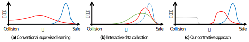
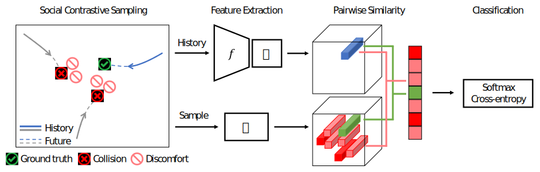
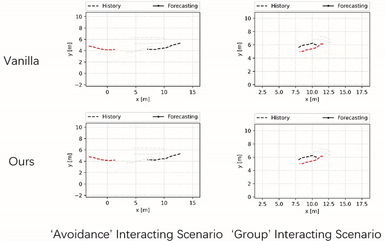
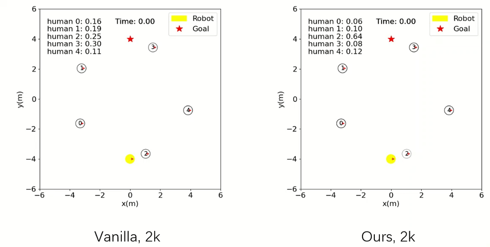

Learning socially-aware motion representations is at the core of recent advances in multi-agent problems, such as human motion forecasting and robot navigation in crowds. Despite promising progress, existing representations learned with neural networks still struggle to generalize in closed-loop predictions (e.g., output colliding trajectories). This issue largely arises from the non-i.i.d. nature of sequential prediction in conjunction with ill-distributed training data. Intuitively, if the training data only comes from human behaviors in safe spaces, i.e., from “positive” examples, it is difficult for learning algorithms to capture the notion of “negative” examples like collisions.
In this work, we aim to address this issue by explicitly modeling negative examples through self-supervision: (i) we introduce a social contrastive loss that regularizes the extracted motion representation by discerning the ground-truth positive events from synthetic negative ones; (ii) we construct informative negative samples based on our prior knowledge of rare but dangerous circumstances. Our method substantially reduces the collision rates of recent trajectory forecasting, behavioral cloning and reinforcement learning algorithms, outperforming state-of-the-art methods on several benchmarks.
Our key idea is to explicitly model negative examples based on our prior knowledge. Intuitively, one effective way to explain the social norms behind positive examples is to portray the opposite negative examples like collisions. Our method can be viewed as a form of negative data augmentation through self-supervision, as opposed to laboriously collecting additional state-action pairs from dangerous scenarios.
Above is an illustration of different learning approaches to sequential predictions:
We formulate this intuition into a new learning framework that consists of two components, a social contrastive loss and a negative sampling strategy.
Given a scenario that contains a primary agent of interest (blue) and multiple neighboring agents in the vicinity (gray), our Social-NCE loss encourages the extracted motion representation, in an embedding space, to be close to a positive future event and apart from some synthetic negative events that could have caused collisions or discomforts.
Our method tends to jointly adjust the trajectories of multiple agents, whereas the vanilla method leads to collisions between the primary (black) and the nearby agent (red).
The agent trained with our method is already able to accomplish the navigation task safely and efficiently, whereas the baseline one crashes with collisions.
@article{liu2020snce,
title = {Social NCE: Contrastive Learning of Socially-aware Motion Representations},
author = {Yuejiang Liu and Qi Yan and Alexandre Alahi},
journal = {arXiv preprint arXiv:2012.11717},
year = {2020}
}